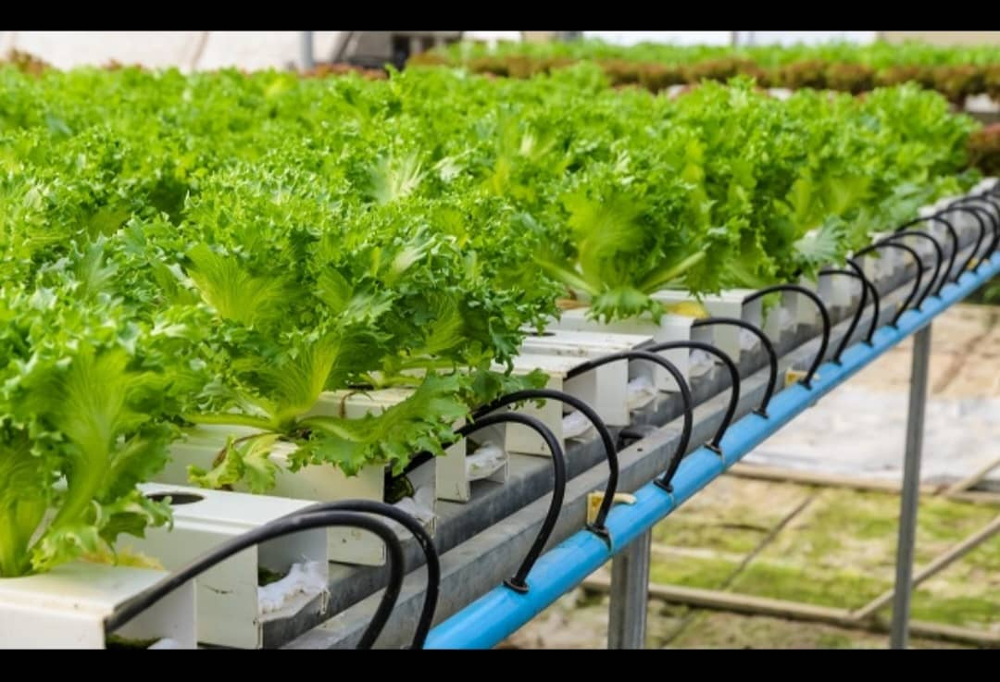
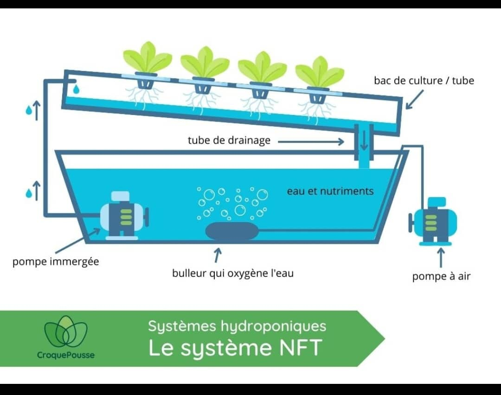
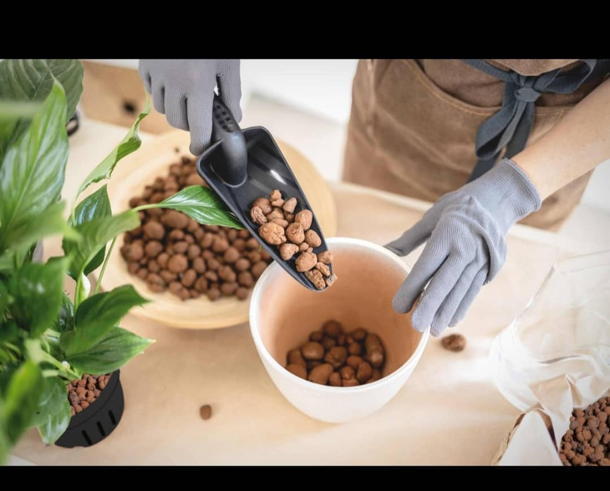

Introduction à l'Hydroculture
L'hydroculture est une méthode innovante de culture des plantes sans sol, utilisant une solution nutritive.
Regarder la vidéo introductive

Fabrication du Système Hydroponique
1.Choisissez un système adapté (NFT, culture en eau profonde, etc.).
2.Installez les réservoirs et les substrats.
- 3.réparez la solution nutritive.
4.Assemblez les tuyaux et pompes pour l'irrigation.

Gestion et Entretien
Surveillez le pH de la solution (idéal entre 5.5 et 6.5).
Ajoutez régulièrement des nutriments selon les besoins des plantes.
Assurez un éclairage adéquat (LED ou lumière naturelle).
Nettoyez les réservoirs pour éviter les algues ou maladies.

Nettoyage du Système Hydroponique
Le nettoyage régulier est essentiel pour éviter les maladies et prolonger la durée de vie de votre système.
Regarder le tutoriel sur le nettoyage du système Dutch Bucket